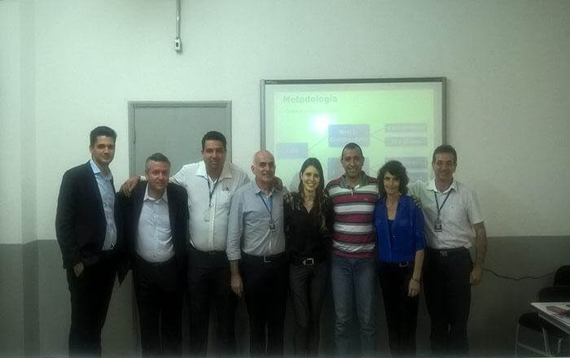

Pesquisar...
Os alunos do 8º semestre do curso de Administração da Faculdade Impacta apresentaram, dia 14 de dezembro, os trabalhos de conclusão de curso (OPE?s). Ao todo, foram dois grupos com temas inovadores e um case real já aplicado no mercado.
Para a coordenadora do curso, Professora Francesca Romanelli, o trabalho é fruto do aprendizado e metodologia desenvolvido ao longo do curso e engloba fatores fundamentais como planejamento, pesquisa e processos: “Trata-se de trabalhos multidisciplinares que desenvolvem valores e conhecimentos fundamentais para esses alunos continuarem em destaque no mercado”, disse.
Os alunos Douglas Felipe Torres e Felipe Ferreira da Silva desenvolveram e implementaram um projeto para melhoria da gestão das informações dos indicadores de desempenhos da Cruz Vermelha do Estado de São Paulo, através de uma ferramenta metodológica, desenvolvida em Microsoft Excel e adaptada da metodologia ITIL. A solução foi pensada 100% no usuário final – de fácil utilização e intuitiva.
A ferramenta já está em utilização na Cruz Vermelha com aprovação total dos seus voluntários e colaboradores. Para os alunos Douglas Torres, um dos idealizadores da solução, o resultado foi fantástico: “Nos pudemos contribuir com a parte de gestão das informações, eles não tinham esse controle por departamento, tem sido um grande facilitador para eles”.
Já as alunas Isabel Maria Pires Lopes e Melissa Lopes Frank realizaram um trabalho de pesquisa sobre o impacta da geração Z no mercado de trabalho baseado no conflito de gerações, cultura e clima organizacional.
A pesquisa mostrou dados concretos da diferença de pensamento dos gestores para os jovens que estão entrando no mercado de trabalho, a geração Z nasceu e vive em um mundo conectado e globalizado, assim tem uma visão bem ampla do mundo, e conluio – de modo geral – que as organizações terão que se readaptar para reter os jovens talentos extrair sempre o melhor de cada jovem colaborador.
A Faculdade Impacta deseja um grande futuro aos alunos e parabeniza a todos pelo sucesso e qualidade dos trabalhos!